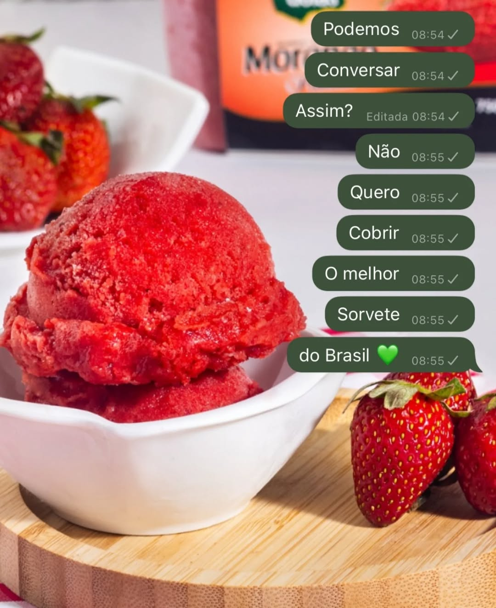
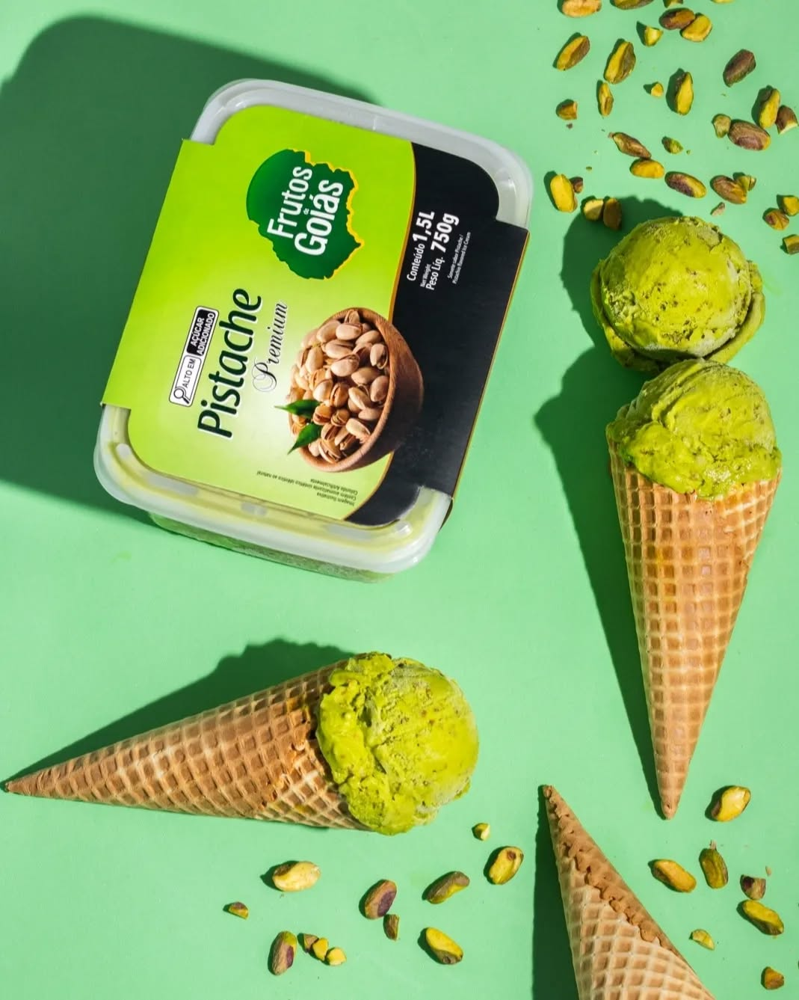

Os melhores sorvetes de Bom Jesus
Trabalhamos com sorvetes naturais, cremosos e cheios de sabor. Um lugar perfeito para você e sua família!
🕛 Todos os dias das 12:00 às 22:00
📍 Rua José Parente, Centro - Bom Jesus PI

